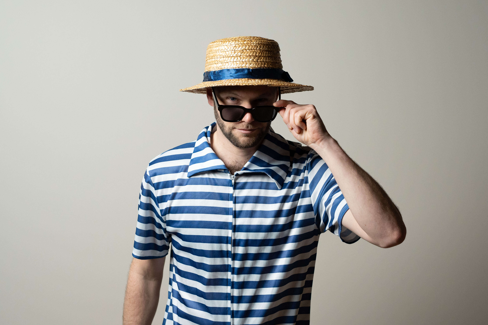

Låtene våre
- Backstreet Boys – I Want It That Way
- Britney Spears – …Baby One More Time
- Bruno Mars, Rosie – APT.
- CC Cowboys – Vill, Vakker & Våt
- CeeLo Green – Fuck You
- Cher – Believe
- Dagny – Somebody
- DDE – Rai-Rai
- Di Derre – Jenter
- Journey – Don’t Stop Believin’
- Kings of Leon – Sex On Fire
- Kurt Nilsen – She’s So High
- Marius Müller – Den Du Vei
- Owl City – Fireflies
- Queen – Don’t Stop Me Now
- Ravi – Tsjeriåu
- Robbie Williams – Angels
- Taylor Swift – Love Story
- Walk The Moon – Shut Up And Dance
- Åge Aleksandersen – Levva Livet
- ... og mange, mange flere!
VI ER BADEGJESTENE

Badegjestene er et Oslo-basert partyband som alltid leverer show med et glimt i øyet og en hitparade av låter som får publikum til å synge og danse. Kledd i badedrakter fra 1920-tallet, kombinerer de humor og musikalsk energi på en måte som engasjerer både unge og gamle.
Med et repertoar som spenner fra norske allsangfavoritter til internasjonale klassikere, sørger Badegjestene for topp stemning, uansett scene. En energisk vokalist leder an, støttet av et samspilt band som alltid gir alt. Enten det er sommerfestival, afterski eller låvefest, er Badegjestene garantien for et publikum som går hjem med store smil og slitne danseføtter.
Petter Stadsøy
Vokal
Kristian Jøsok
Gitar
Eskil Gauslaa Hummelsund
Bass

Tarje Sandvik
Keys
Martin Johansen
Trommer